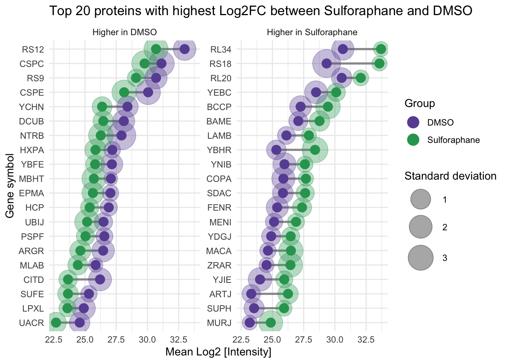

2.3 Coordinates - Plot geoms
You can view the coordinates part of the plot as an interpreter of position aesthetics. While typically Cartesian coordinates are used, the coordinate system powers the display of map projections and polar plots.
We can also use coordinates to display a plot with a fixed aspect ratio so that one unit has the same length in both the x and y directions. The coord_fixed() function sets this ratio automatically.

You might guess that by substituting geom_point() for a different geom function, you’d get a different type of plot.
That’s a great guess!
In the following sections, you’ll learn about some of the other important geoms provided in ggplot2. This isn’t an exhaustive list, but should cover the most commonly used plot types.
geom_smooth()fits a smoother to the data and displays the smooth and its standard error.geom_boxplot()produces a box-and-whisker plot to summarise the distribution of a set of points.geom_histogram()andgeom_freqpoly()show the distribution of continuous variables.geom_bar()shows the distribution of categorical variables.geom_path()andgeom_line()draw lines between the data points. A line plot is constrained to produce lines that travel from left to right, while paths can go in any direction. Lines are typically used to explore how things change over time.
2.3.1 Adding a smoother to a plot
If you have a scatterplot with a lot of noise, it can be hard to see the dominant pattern.
In this case it’s useful to add a smoothed line to the plot with geom_smooth():
## `geom_smooth()` using method = 'loess' and formula = 'y ~ x'
This overlays the scatterplot with a smooth curve, including an assessment of uncertainty in the form of point-wise confidence intervals shown in grey.
If you’re not interested in the confidence interval, turn it off with geom_smooth(se = FALSE).
An important argument to geom_smooth() is the method, which allows you to choose which type of model is used to fit the smooth curve:
method = "loess", the default for small n, uses a smooth local regression (as described in?loess).The wiggliness of the line is controlled by the
spanparameter, which ranges from 0 (exceedingly wiggly) to 1 (not so wiggly).## `geom_smooth()` using method = 'loess' and formula = 'y ~ x'
## `geom_smooth()` using method = 'loess' and formula = 'y ~ x'
Loess does not work well for large datasets (it’s \(O(n^2)\) in memory), so an alternative smoothing algorithm is used when \(n\) is greater than 1,000.
method = "gam"fits a generalised additive model provided by the mgcv package.You need to first load mgcv, then use a formula like
formula = y ~ s(x)ory ~ s(x, bs = "cs")(for large data).This is what ggplot2 uses when there are more than 1,000 points.
library(mgcv) ggplot(mpg, aes(displ, hwy)) + geom_point() + geom_smooth(method = "gam", formula = y ~ s(x))
method = "lm"fits a linear model, giving the line of best fit.## `geom_smooth()` using formula = 'y ~ x'
method = "rlm"works likelm(), but uses a robust fitting algorithm so that outliers don’t affect the fit as much. It’s part of the MASS package, so remember to load that first.
2.3.2 Boxplots and jittered points
When a set of data includes a categorical variable and one or more continuous variables, you will probably be interested to know how the values of the continuous variables vary with the levels of the categorical variable.
Say we’re interested in seeing how fuel economy varies within cars that have the same kind of drivetrain.
We might start with a scatterplot like this:

Because there are few unique values of both drv and hwy, there is a lot of overplotting.
Many points are plotted in the same location, and it’s difficult to see the distribution.
There are three useful techniques that help alleviate the problem:
Jittering,
geom_jitter(), adds a little random noise to the data which can help avoid overplotting.Boxplots,
geom_boxplot(), summarise the shape of the distribution with a handful of summary statistics.Violin plots,
geom_violin(), show a compact representation of the “density” of the distribution, highlighting the areas where more points are found.
These are illustrated below:


Each method has its strengths and weaknesses. Boxplots summarise the bulk of the distribution with only five numbers, while jittered plots show every point but only work with relatively small datasets. Violin plots give the richest display, but rely on the calculation of a density estimate, which can be hard to interpret.
For jittered points, geom_jitter() offers the same control over aesthetics as geom_point(): size, colour, and shape.
For geom_boxplot() and geom_violin(), you can control the outline colour or the internal fill colour.